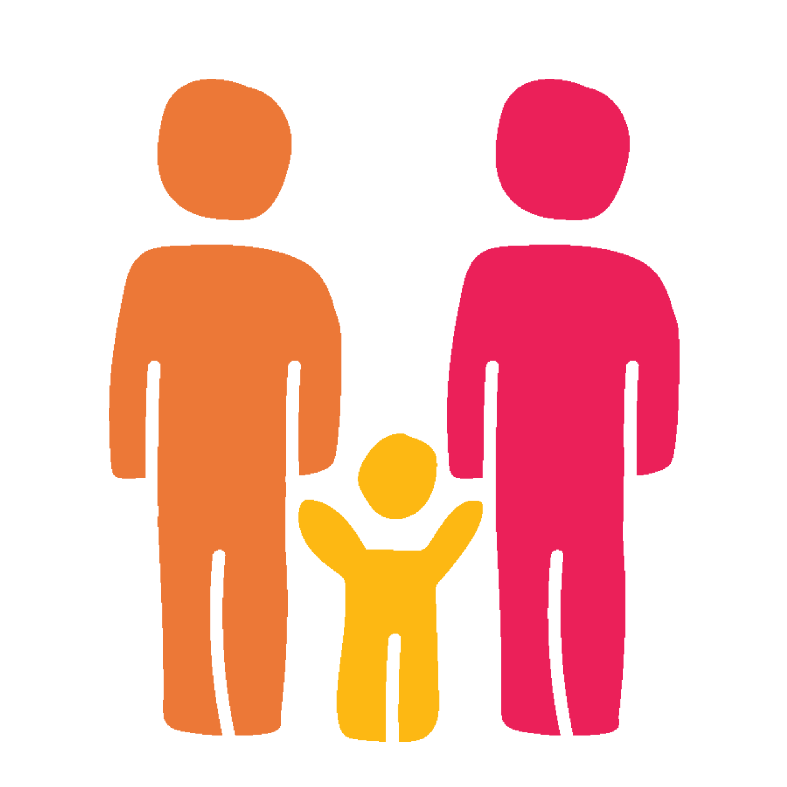
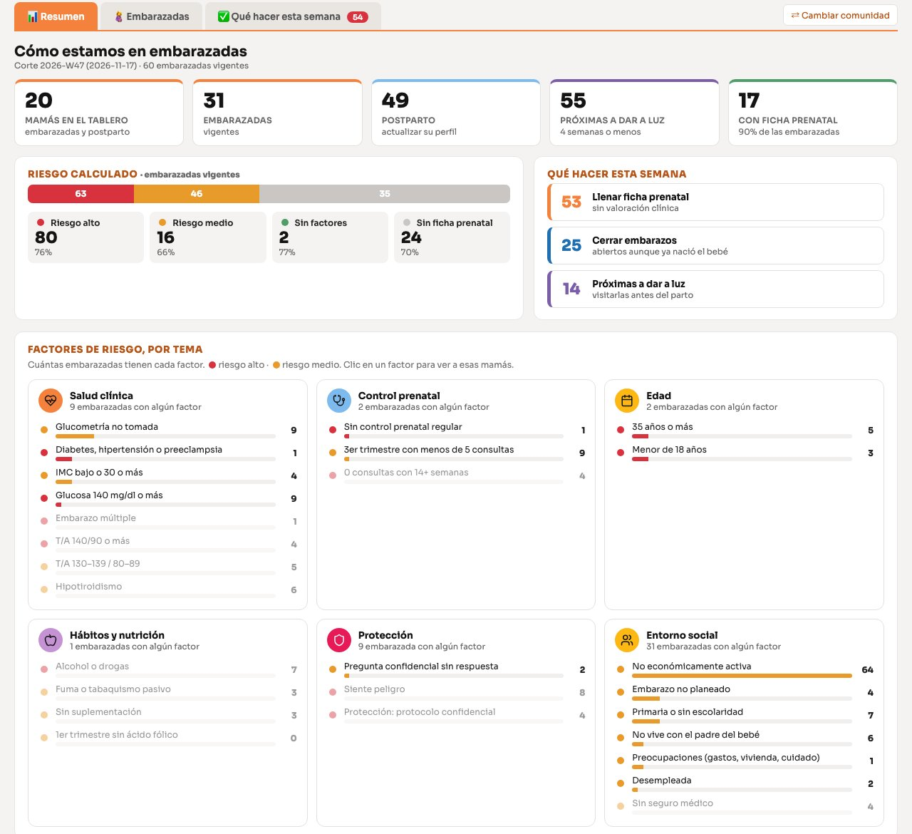
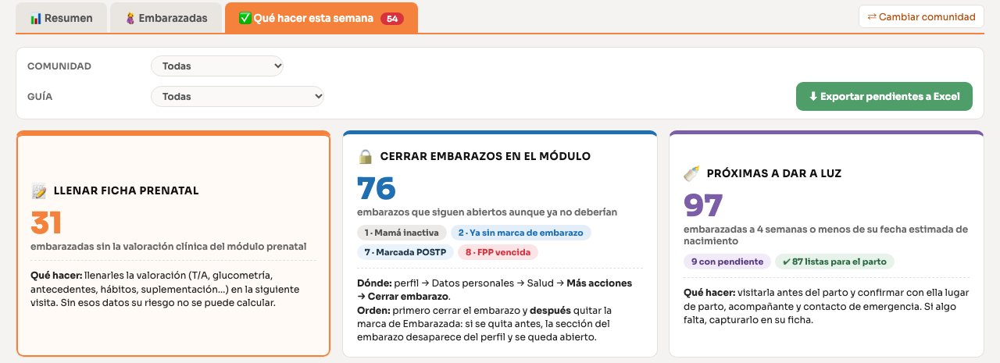

Manual de Acompañamiento a Embarazadas
Cómo dar seguimiento a las mamás embarazadas: qué quiere decir cada estado, cómo se calcula el riesgo y cómo usar los pendientes de la semana.
1¿Para qué sirve?
Da seguimiento a las mamás embarazadas y en postparto: cuántas hay, qué riesgo tiene cada una, qué falta capturar y quiénes están por dar a luz. Su vista principal es una lista de acción: qué hacer esta semana.
2¿De dónde viene la información?
3Cómo moverte en el reporte
- Al abrir, elige la comunidad: Cuatro Ciénegas, Independencia o Coordinación (las dos juntas). ⇄ Cambiar comunidad, arriba a la derecha, te regresa a elegir.
- Tres vistas: 📊 Resumen, 🤰 Embarazadas y ✅ Qué hacer esta semana (con el número de pendientes).
- En los factores de riesgo y en los pendientes, da clic para ver a las mamás que están detrás de cada número.
4Embarazada o postparto
| Estado | Quién entra |
|---|---|
| Embarazada | Mamás con el perfil marcado como embarazada y el embarazo vigente. |
| Postparto | Mamás que la guía marcó como POSTP, o cuya fecha estimada de nacimiento (FPP) pasó hace más de 2 semanas. Su perfil sigue como embarazada y hay que actualizarlo. |
Próximas a dar a luz son las embarazadas a 4 semanas o menos de su fecha estimada de nacimiento.
5El riesgo calculado
- Riesgo alto: tiene al menos un factor de riesgo alto (en rojo en el resumen).
- Riesgo medio: tiene factores de riesgo medio (en amarillo), pero ninguno alto.
- Sin factores: tiene ficha prenatal y no aparece ningún factor.
- Sin ficha prenatal: no tiene la valoración clínica capturada, así que el riesgo no se puede calcular.
Los factores se agrupan en seis temas: salud clínica (glucosa, presión arterial, IMC, enfermedades), control prenatal (consultas según el trimestre), edad de la mamá, hábitos y nutrición (tabaco, alcohol, suplementación), protección y entorno social (escolaridad, empleo, seguro médico, si el embarazo fue planeado).
6Las tres vistas
Da clic en una vista para ver qué responde y qué mirar primero.
📊 Resumena fondo¿Cómo estamos en embarazadas?

- Arriba: mamás en el tablero, embarazadas vigentes, postparto, próximas a dar a luz y cuántas tienen ficha prenatal.
- Riesgo calculado de las embarazadas vigentes y un adelanto de qué hacer esta semana.
- Factores de riesgo, por tema: cuántas mamás tienen cada factor. Da clic en uno para ver a esas mamás.
- Hasta abajo, los mismos conteos por comunidad.
🤰 Embarazadas¿Quiénes son y cómo va cada una?
- La lista de mamás, con filtros por comunidad, zona, localidad, estado (embarazada o postparto), riesgo, si la familia tiene niños P2040 o es primeriza, y si tiene visitas, casos o programas.
- Al dar clic en un nombre se abre su ficha: datos del embarazo, factores de riesgo, fechas por actualizar y su acompañamiento.
✅ Qué hacer esta semanaa fondo¿Qué tiene que hacer cada guía esta semana?

- 📝 Llenar ficha prenatal: embarazadas sin valoración clínica. En la siguiente visita hay que capturar presión arterial, glucometría, antecedentes, hábitos y suplementación.
- 🔒 Cerrar embarazos en el módulo: embarazos que siguen abiertos aunque ya no deberían (mamá inactiva, ya sin marca de embarazo, marcada POSTP o con la FPP vencida).
- 🍼 Próximas a dar a luz: visitarlas antes del parto y confirmar lugar de parto, acompañante y contacto de emergencia.
- Más abajo, Pendientes por guía (clic en una guía para ver solo los suyos) y la lista de cada pendiente. Filtra por comunidad o guía y usa ⬇ Exportar pendientes a Excel para bajarla.
7Preguntas frecuentes
Una mamá ya tuvo a su bebé y sigue como embarazada
Hay que cerrar su embarazo en el módulo de Salud y después quitar la marca de Embarazada. Mientras tanto aparece como postparto y en el pendiente «Cerrar embarazos».
¿Por qué el Excel no trae todos los factores?
Los factores del tema protección solo se ven en el tablero; no salen en el Excel, para cuidar a las mamás.
¿Qué es una primeriza?
En este reporte, una mamá embarazada sin niños P2040 en su familia.